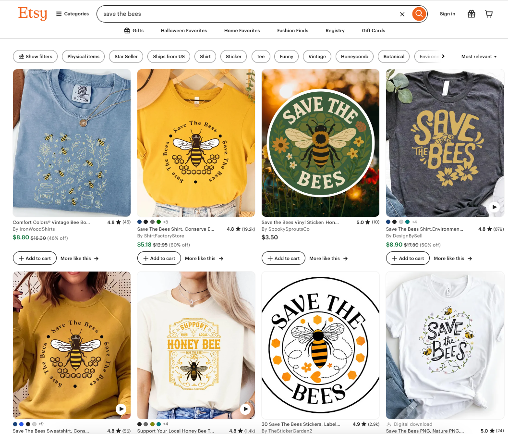
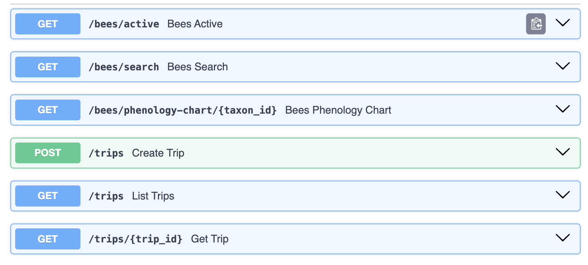
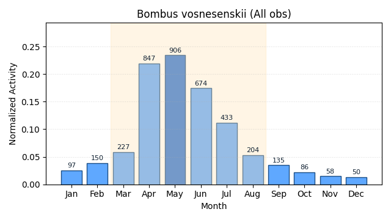
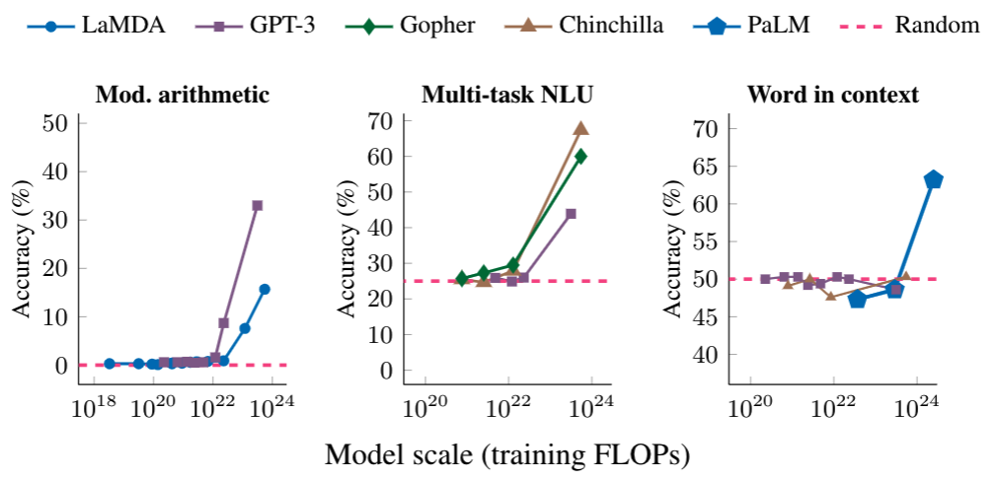
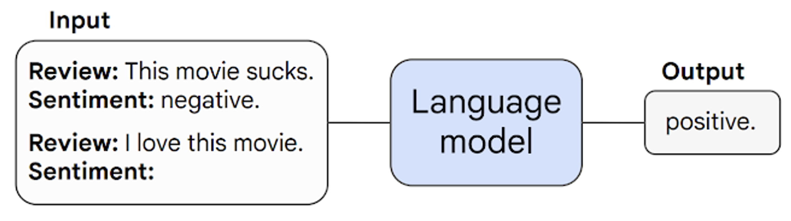
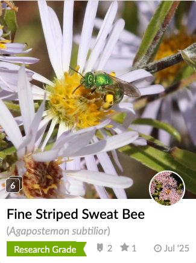
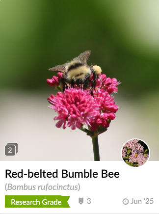
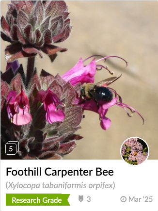
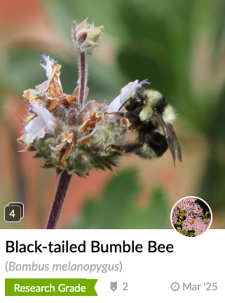

Just because AI
can write your tests,
...should it?
Pamela Fox
About me

Python Cloud Advocate at Microsoft
Formerly: UC Berkeley, Coursera, Khan Academy, Google
Find me online at:
| Mastodon | @pamelafox@fosstodon.org |
| BlueSky | @pamelafox.bsky.social |
| @pamelafox | |
| www.linkedin.com/in/pamela-s-fox/ | |
| GitHub | www.github.com/pamelafox |
| Website | pamelafox.org |
But first...
BEES! 🐝
Everyone knows the honeybee

Meet the Western Honey Bee, a generalist:
Apis mellifera
Ceanothus
📍 El Cerrito, CA
The honey bee can pollinate many plants:
- Okra
- Kiwifruit
- Onion
- Cashew
- Celery
- Strawberry tree
- Starfruit
- Beet
- Mustard
- Rapeseed
- Broccoli
- Cauliflower
- Cabbage
- Brussels sprouts
- Chinese cabbage
- Turnip
- Canola
- Pigeon pea
- Chili
- Bell pepper
- Papaya
- Safflower
- Caraway
- Chestnut
- Watermelon
- Tangerine
- Orange
- Grapefruit
- Tangelo
- Coconut
- Coffee
- Coriander
- Crownvetch
- Azarole
- Cantaloupe
- Melon
- Cucumber
- Squash
- Pumpkin
- Gourd
- Zucchini
- Guar bean
- Quince
- Lemon
- Lime
- Carrot
- Hyacinth bean
- Longan
- Persimmon
- Cardamom
- Loquat
- Buckwheat
- Feijoa
- Fennel
- Strawberry
- Cotton
- Sunflower
- Flax
- Lychee
- Lupine
- Macadamia
- Acerola
- Apple
- Mango
- Alfalfa
- Rambutan
- Sainfoin
- Avocado
- Lima bean
- Kidney bean
- Haricot bean
- Mungo bean
- String bean
- Green bean
- Scarlet runner bean
- Allspice
- Apricot
- Sweet cherry
- Sour cherry
- Plum
- Greengage
- Mirabelle
- Sloe
- Almond
- Peach
- Nectarine
- Guava
- Pomegranate
- Pear
- Black currant
- Red currant
- Rose hips
- Boysenberry
- Raspberry
- Blackberry
- Elderberry
- Sesame
- Broad bean
- Vetch
- Cowpea
- Black-eyed pea
- Karite (Shea)
- Grape
- Jujube
- Tamarind
- Clover
- White clover
- Alsike clover
- Crimson clover
- Red clover
- Arrowleaf clover
- Blueberry
- Cranberry
Sometimes a specialist is better...
Bombus vosnesenskii
🌸 California Buckwheat
📍 El Cerrito, CA
According to research, the Yellow-faced Bumble Bee is a more effective pollinator of tomatoes 🍅 than humans 🧑🔬 or honey bees 🐝.
Meet my favorite California specialist bee
Habropoda depressa
Salvia Clevandii
📍 El Cerrito, CA
Digger bees use buzz pollination to shake pollen loose from flowers.
Plants that require buzz pollination to release all pollen:
- Blueberries
- Cranberries
- Tomatoes
- Eggplants
- Manzanita
- Sun Pitchers
- Shooting Stars
- Flax Lillies
- Senna
Find specialist bees near you
Use iNaturalist
to find and identify all the native bees in your area
OR use the data to build your own bee searching app!


My demo app: Python + FastAPI + PostgreSQL
https://github.com/pamelafox/pybay-app-demo
What do bees have to do with AI?
...and testing?
Meet the LLM, a generalist
An LLM is a ML model that is so large that it achieves general-purpose language understanding & generation.


Source: Characterizing Emergent Phenomena in Large Language Models https://research.google/blog/characterizing-emergent-phenomena-in-large-language-models/
LLMs know how to write Python tests
If we start off with code in a testless codebase, what tests will LLMs write?
@router.get("/bees/search", response_model=SpeciesSearchResponse)
async def bees_search(
database_session: DBSession,
q: str = Query(..., min_length=2, description="Keyword(s) to search in scientific or common name"),
limit: int = Query(25, gt=0, le=100, description="Maximum number of species to return"),
) -> SpeciesSearchResponse:
...
The prompt:
Write tests for routes.py that test each API endpoint, using the fixtures in conftest.py. The tests should test the local test database that is already seeded with data - so you shouldn't need any mocks.
LLM-written tests: GPT-5
Example test to check the /bees/active endpoint:
def test_bees_active_basic(test_client):
resp = test_client.get("/bees/active", params={"lat": 37.757, "lon": -122.441})
assert resp.status_code == 200
js = resp.json()
assert "data" in js and isinstance(js["data"], list)
assert "meta" in js and isinstance(js["meta"], dict)
assert js["meta"]["count"] == len(js["data"])
assert "months" in js["meta"] and len(js["meta"]["months"]) in (1, 2)
first = js["data"][0]
for f in ["taxon_id", "scientific_name", "activity_score"]:
assert f in first
| Tests passed? | Coverage of routes.py | Time | Tokens |
|---|---|---|---|
| ❌ 8/10 | 75% | 1m 49s | 515,865 |
🔗 See: Full tests file | Copilot logs
LLM-written tests: Claude Sonnet 4.5
Example test to check the /bees/active endpoint:
def test_bees_active_basic(self, test_client):
response = test_client.get("/bees/active?lat=37.7749&lon=-122.4194")
assert response.status_code == 200
data = response.json()
assert "data" in data
assert "meta" in data
assert isinstance(data["data"], list)
assert "count" in data["meta"]
assert "lat" in data["meta"]
assert "lon" in data["meta"]
| Tests passed? | Coverage of routes.py | Time | Tokens |
|---|---|---|---|
| ✅ 61/61 | 96% | 6m 29.0s | 1,326,619 |
🔗 See: Full tests file | Copilot logs
LLM-written tests: Overall results
| LLM | Tests passed? | Coverage | Tokens | Time |
|---|---|---|---|---|
| GPT-5 | ❌ 8/10 passed | 75% | 598,980 | 1m 47.7s |
| Claude 4.5 | ✅ 61/61 passed | 96% | 1,326,619 | 6m 29s |
| GPT-5-mini | ✅ 4/4 passed | 81% | 493,132 | 1m 41s |
| GPT-5-codex | ✅ 9/9 passed | 85% | 429,049 | 2m 57s |
| Gemini 2.5 | ✅ 7/7 passed | 81% | 374,071 | 2m 15s |
Is it good enough to use a powerful LLM to write our tests?
Problem #1: Not enough coverage!
How do humans get 100% coverage?
By reviewing coverage reports! Let's see if the LLM can do that too...
The prompt addendum:
The goal is for the tests to cover all lines of code. Generate a coverage report with: pytest --cov --cov-report=annotate:cov_annotate Open the cov_annotate directory to view the annotated source code. There will be one file per source file. If a file has 100% source coverage, it means all lines are covered by tests, so you do not need to open the file. For each file that has less than 100% test coverage, find the matching file in cov_annotate and review the file. If a line starts with a ! (exclamation mark), it means that the line is not covered by tests. Add tests to cover the missing lines. Keep running the tests and improving coverage until all lines are covered.
Can LLMs achieve 100% coverage?
Sonnet 4.5 gave up at 98% with this explanation:
Excellent! We now have 54 passing tests with 98% coverage on the routes.py file. The 4 missing lines are defensive edge cases that are difficult to test with real data:
Lines 281, 284: Array length validation fallbacks (would need corrupted database data)
Lines 320, 322: Number formatting for millions/thousands (would need species with extremely high observation counts)
| Tests passed? | Coverage of routes.py | Time | Tokens |
|---|---|---|---|
| ✅ 54/54 | 98% | 4.0m 56s | 1,225,737 |
🔗 See: Full tests file | Copilot logs
But those tests still have problems...
- Redundant test code
- Fake data that doesn't reflect the real world
- Missing edge cases, deceptive coverage %
Let's bring in the specialists!
🪰 🪲 🦟
Problem: Redundant test code
These LLM-generated tests are highly repetitive:
def test_bees_active_sort_activity_desc(self, test_client):
response = test_client.get("/bees/active",
params={"lat": 37.7749, "lon": -122.4194, "sort": "activity_desc"})
assert response.status_code == 200
data = response.json()
scores = [item["activity_score"] for item in data["data"]]
assert scores == sorted(scores, reverse=True)
def test_bees_active_sort_activity_asc(self, test_client):
response = test_client.get("/bees/active",
params={"lat": 37.7749, "lon": -122.4194, "sort": "activity_asc"})
assert response.status_code == 200
data = response.json()
scores = [item["activity_score"] for item in data["data"]]
assert scores == sorted(scores)
Solution: Parameterize variables
When the only thing different in a test is a value, parameterize the value(s):
@pytest.mark.parametrize(
"sort_param, reverse",
[("activity_desc", True),
("activity_asc", False)])
def test_bees_active_sort(self, test_client, sort_param, reverse):
response = test_client.get("/bees/active", params={
"lat": 37.7749, "lon": -122.4194, "sort": sort_param})
assert response.status_code == 200
data = response.json()
values = [item["activity_score"] for item in data["data"]]
assert values == sorted(values, reverse=reverse)
Solution: Use fixtures for common test components
If multiple tests require the same thing, make it pytest fixture.
A fixture that adds a test trip to DB and cleans it up:
@pytest_asyncio.fixture
async def sample_trip(db_session):
trip = Trip(
event_name="Sample Test Trip",
start_time=datetime.fromisoformat("2025-06-01T10:00:00").date(),
end_time=datetime.fromisoformat("2025-06-01T15:00:00").date(),
organizers=[{"original": "Test Organizer", "role": "guide"}])
db_session.add(trip)
await db_session.commit()
await db_session.refresh(trip)
yield trip
await db_session.delete(trip)
await db_session.commit()
🔗 See: Full tests file
Problem: Fake data that isn't real enough
LLMs often generate simplistic fake data, like for names:
"organizers": [{"display_name": "John Doe", "role": "guide"}],
"organizers": [{"display_name": "Jane Smith"}],
Those names don't encapsulate all the complexity of names in the real world.
What about..
- Names with non-ASCII characters
- Names with multiple middle names
- Names with accents
- Names with hyphens
Solution: Use Faker for real-world fake data
If your test is using test values for things like names, phone numbers, credit cards, etc., use Faker to generate realistic values instead.
from faker import Faker
def test_create_trip_basic(self, test_client):
event_name = f"Test Trip {uuid.uuid4().hex[:8]}"
fake = Faker()
organizer_name = fake.name()
response = test_client.post("/trips", json={
"event_name": event_name,
"organizers": [{"display_name": organizer_name, "role": "guide"}],
"start_time": "2025-05-01T10:00:00",
"end_time": "2025-05-01T15:00:00"})
🔗 See: Full tests file
Problem: Tests don't check full output
LLM-generated tests check for existence of fields, but typically do not understand the data enough to check full values:
def test_bees_active_basic(self, test_client):
response = test_client.get(
"/bees/active",
params={"lat": 37.7749, "lon": -122.4194})
assert response.status_code == 200
data = response.json()
assert "data" in data
assert "meta" in data
assert isinstance(data["data"], list)
assert "count" in data["meta"]
Solution: Snapshot testing
Instead of checking specific fields, use pytest-snapshot to store and compare full outputs. Any changes will require explicit snapshot update.
@freeze_time("2025-06-15")
def test_bees_active_basic(self, test_client, snapshot):
response = test_client.get(
"/bees/active",
params={"lat": 37.7749, "lon": -122.4194})
assert response.status_code == 200
data = response.json()
snapshot.assert_match(json.dumps(data), "bees_active_basic.json")
Is that enough??
Problem: 100% coverage isn't enough
Even with 100% coverage, tests may miss edge cases and unexpected inputs.
- What if lat/lon are out of bounds?
- What if dates are in the future?
- What if radius_km is negative?
- What if limit is zero?
These edge cases can cause unhandled exceptions, leading to 500 errors when the app is used by real users.
Solution: Property-based testing
Instead of writing individual test cases for each edge case, use property-based testing to generate a wide range of inputs automatically:
- Hypothesis for any program

- Schemathesis for APIs specifically
Hypothesis for unit tests
from hypothesis import given, strategies as st
@given(taxon_id=st.integers())
def test_phenology_chart_any_integer(test_client, taxon_id: int):
response = test_client.get(f"/bees/phenology-chart/{taxon_id}")
assert response.status_code in (200, 404)
@given(
lat=st.floats(min_value=-90, max_value=90, allow_nan=False, allow_infinity=False),
lon=st.floats(min_value=-180, max_value=180, allow_nan=False, allow_infinity=False),
min_act=st.floats(min_value=0.0, max_value=1.0, allow_nan=False, allow_infinity=False),
)
def test_bees_active_scores(test_client, lat: float, lon: float, min_act: float) -> None:
response = test_client.get("/bees/active",
params={"lat": lat, "lon": lon, "absolute_activity": False, "min_activity": min_act})
assert response.status_code == 200
payload = response.json()
assert payload["meta"]["count"] == len(payload["data"])
for item in payload["data"]:
score = item["activity_score"]
assert 0.0 <= score <= 1.0
assert score >= min_act
Hypothesis results
From the first test for /bees/phenology-chart/{taxon_id},
hypothesis found this failure case:
sqlalchemy.exc.DBAPIError: (sqlalchemy.dialects.postgresql.asyncpg.Error)
<class 'asyncpg.exceptions.DataError'>: invalid input for query argument $1: 9223372036854775808 (value out of int64 range)
[SQL: SELECT species.taxon_id, species.scientific_name, species.common_name, species.family, species.subfamily, species.tribe, species.genus, species.species_epithet, species.rank, species.total_observations, species.phenology_counts, species.phenology_normalized, species.peak_month, species.window_start, species.window_end, species.seasonality_index, species.insufficient_data, species.peak_prominence, species.total_observations_all, species.phenology_counts_all, species.phenology_normalized_all, species.peak_month_all, species.window_start_all, species.window_end_all, species.seasonality_index_all, species.insufficient_data_all, species.peak_prominence_all
FROM species
WHERE species.taxon_id = $1::BIGINT]
[parameters: (9223372036854775808,)]
(Background on this error at: https://sqlalche.me/e/20/dbapi)
Falsifying example: test_phenology_chart_any_integer(
test_client=,
taxon_id=9223372036854775808,
)Schemathesis for API tests
Schemathesis can generate tests for all API endpoints defined in an OpenAPI spec, including edge cases for query parameters, request bodies, etc.
import pytest
import schemathesis
@pytest.fixture
def web_app(app):
return schemathesis.openapi.from_asgi("/openapi.json", app)
schema = schemathesis.pytest.from_fixture("web_app")
@schema.parametrize()
def test_openapi_specification(case):
case.call_and_validate()
Schemathesis results
When probing the bees/phenology-chart/{taxon_id} endpoint,
schemathesis found the same error:
sqlalchemy.exc.DBAPIError: (sqlalchemy.dialects.postgresql.asyncpg.Error) <class 'asyncpg.exceptions.DataError'>:
invalid input for query argument $1: 9223372036854775808 (value out of int64 range)
[SQL: SELECT species.taxon_id, species.scientific_name, species.common_name, species.family, species.subfamily, species.tribe, species.genus, species.species_epithet, species.rank, species.total_observations, species.phenology_counts, species.phenology_normalized, species.peak_month, species.window_start, species.window_end, species.seasonality_index, species.insufficient_data, species.peak_prominence, species.total_observations_all, species.phenology_counts_all, species.phenology_normalized_all, species.peak_month_all, species.window_start_all, species.window_end_all, species.seasonality_index_all, species.insufficient_data_all, species.peak_prominence_all
FROM species
WHERE species.taxon_id = $1::BIGINT]
[parameters: (9223372036854775808,)]
(Background on this error at: https://sqlalche.me/e/20/dbapi)
Reproduce with:
curl -X GET http://localhost/bees/phenology-chart/9223372036854775808Should you use LLMs to write your tests?
It's up to you!
Everyone belongs in the Python community, whether or not they use AI.
But if you do, you should seed the LLM with tips for writing great tests, using the specialist tools from the amazing Python ecosystem.
A prompt for LLM-based test generation
Write tests for routes.py that test each API endpoint, using the fixtures in conftest.py. The tests should test the local test database that is already seeded with data - so you shouldn't need any mocks. Use the following guidelines when writing the tests: - Use parameterized tests to avoid redundant code, using pytest.mark.parametrize - Create fixtures for any common test components, using pytest.fixture - Use Faker to generate realistic fake data for names, dates, coordinates, etc. - Use snapshot testing for API responses, using the pytest-snapshot plugin and assert_match After writing the initial tests, run coverage analysis with pytest --cov and review the coverage report. For any lines not covered by tests, add additional tests to cover those lines.
Should we use honeybees to pollinate our flowers?
We can keep using honeybees, but we also need to remember the specialists from the amazing bees ecosystem.




To encourage more native bees of all kinds, seed gardens with native plants!
🔗 See: Larner Seeds
Thank you!
Grab the slides @
pamelafox.github.io/my-py-talks/ai-assisted-testing-pybay
Example app @
github.com/pamelafox/pybay-app-demo
Find me online at:
| Mastodon | @pamelafox@fosstodon.org |
| BlueSky | @pamelafox.bsky.social |
| @pamelafox | |
| www.linkedin.com/in/pamela-s-fox/ | |
| GitHub | www.github.com/pamelafox |
| Website | pamelafox.org |